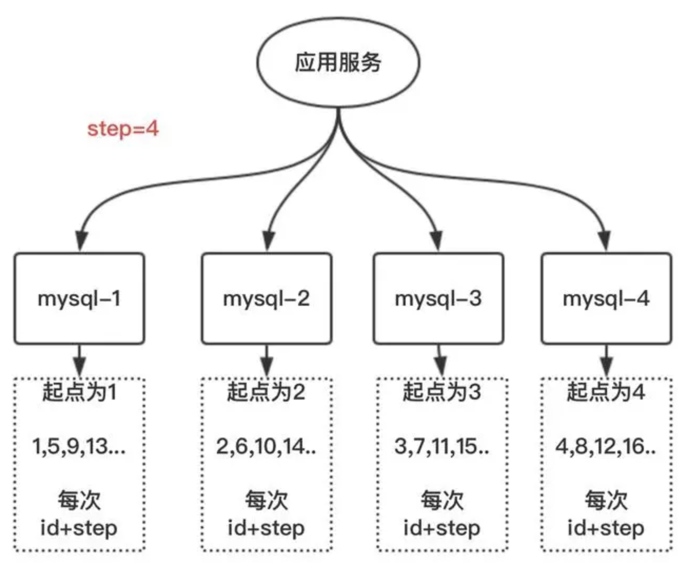
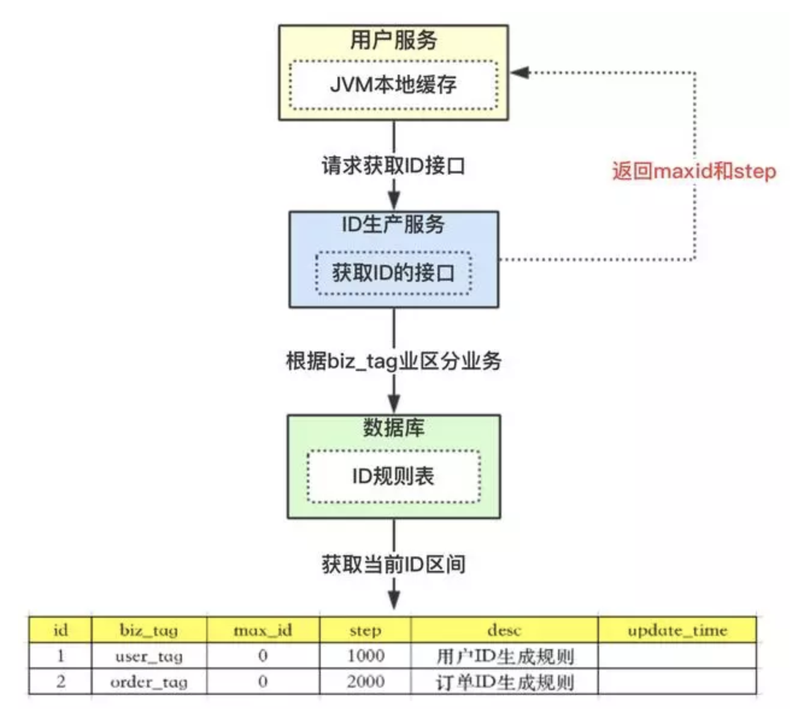
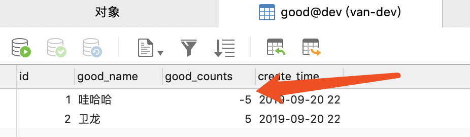
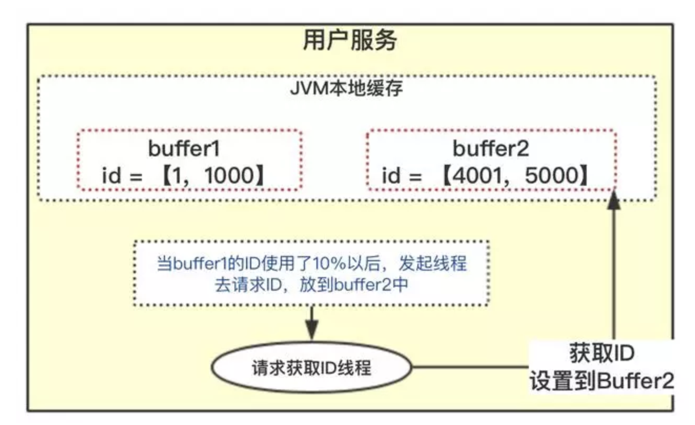

本案例主要讲解
Redis实现分布式锁的两种实现方式：Jedis实现、Redisson实现。网上关于这方面讲解太多了，Van自认为文笔没他们好，还是用示例代码说明。
jedis 实现该方案只考虑
Redis单机部署的场景
jedis.set(String key, String value, String nxxx, String expx, int time)key: 使用key来当锁，因为key是唯一的;value: 我传的是唯一值（UUID），很多童鞋可能不明白，有key作为锁不就够了吗，为什么还要用到value？原因是分布式锁要满足解铃还须系铃人：通过给value赋值为requestId，我们就知道这把锁是哪个请求加的了，在解锁的时候要验证value值，不能误解锁;nxxx: 这个参数我填的是NX，意思是SET IF NOT EXIST，即当key不存在时，我们进行set操作；若key已经存在，则不做任何操作；expx: 这个参数我传的是PX，意思是我们要给这个key加一个过期的设置，具体时间由第五个参数决定;time: 与第四个参数相呼应，代表key的过期时间。set()加入了NX参数，可以保证如果已有key存在，则函数不会调用成功，也就是只有一个客户端能持有锁，满足互斥性;key被删除），不会发生死锁;value赋值为requestId，代表加锁的客户端请求标识，那么在客户端在解锁的时候就可以进行校验是否是同一个客户端。释放锁时需要验证
value值，也就是说我们在获取锁的时候需要设置一个value，不能直接用del key这种粗暴的方式，因为直接del key任何客户端都可以进行解锁了，所以解锁时，我们需要判断锁是否是自己的(基于value值来判断)
Lua脚本代码,作用是：获取锁对应的value值，检查是否与requestId相等，如果相等则删除锁（解锁）;Lua代码传到jedis.eval()方法里，并使参数KEYS[1]赋值为lockKey，ARGV[1]赋值为requestId。eval()方法是将Lua代码交给Redis服务端执行。这里放出的是关键代码，详细可运行的代码可至文末地址下载示例代码。
该案例模拟家庭内多人通过领取一个奖励，但是只能有一个人能领取成功，不能重复领取（之前做过奖励模块的需求）
family_reward_record表CREATE TABLE `family_reward_record` (
`id` bigint(10) NOT NULL AUTO_INCREMENT COMMENT '主键id',
`family_id` bigint(20) NOT NULL DEFAULT '0' COMMENT '商品名称',
`reward_type` int(10) NOT NULL DEFAULT '1' COMMENT '商品库存数量',
`state` int(1) NOT NULL DEFAULT '0' COMMENT '商品状态',
`create_time` timestamp NOT NULL DEFAULT CURRENT_TIMESTAMP COMMENT '入库时间',
`update_time` timestamp NULL DEFAULT CURRENT_TIMESTAMP ON UPDATE CURRENT_TIMESTAMP,
PRIMARY KEY (`id`)
) ENGINE=InnoDB AUTO_INCREMENT=270 DEFAULT CHARSET=utf8mb4 COLLATE=utf8mb4_unicode_ci COMMENT='家庭领取奖励表（家庭内多人只能有一个人能领取成功，不能重复领取）';application.ymlspring:
datasource:
url: jdbc:mysql://47.98.178.84:3306/dev
username: dev
password: password
driver-class-name: com.mysql.jdbc.Driver
redis:
host: 47.98.178.84
port: 6379
password: password
timeout: 2000
# mybatis
mybatis:
mapper-locations: classpath:mapper/*.xml
type-aliases-package: cn.van.mybatis.demo.entityRedisConfig.java@Configuration
public class RedisConfig extends CachingConfigurerSupport {
@Value("${spring.redis.host}")
private String host;
@Value("${spring.redis.port}")
private int port;
@Value("${spring.redis.password}")
private String password;
@Value("${spring.redis.timeout}")
private int timeout;
@Bean
public JedisPool redisPoolFactory() {
JedisPoolConfig jedisPoolConfig = new JedisPoolConfig();
if (StringUtils.isEmpty(password)) {
return new JedisPool(jedisPoolConfig, host, port, timeout);
}
return new JedisPool(jedisPoolConfig, host, port, timeout, password);
}
@Bean(name = "redisTemplate")
public RedisTemplate<String, Object> redisTemplate(RedisConnectionFactory redisConnectionFactory) {
RedisTemplate<String, Object> redisTemplate = new RedisTemplate();
redisTemplate.setConnectionFactory(redisConnectionFactory);
ObjectMapper objectMapper = new ObjectMapper();
objectMapper.setVisibility(PropertyAccessor.ALL, Visibility.ANY);
objectMapper.enableDefaultTyping(DefaultTyping.NON_FINAL);
Jackson2JsonRedisSerializer<Object> jsonRedisSerializer = new Jackson2JsonRedisSerializer(Object.class);
jsonRedisSerializer.setObjectMapper(objectMapper);
redisTemplate.setDefaultSerializer(jsonRedisSerializer);
redisTemplate.setKeySerializer(new StringRedisSerializer());
redisTemplate.afterPropertiesSet();
return redisTemplate;
}
}RedisDistributedLock.java@Component
public class RedisDistributedLock {
/**
* 成功获取锁标示
*/
private static final String LOCK_SUCCESS = "OK";
/**
* 成功解锁标示
*/
private static final Long RELEASE_SUCCESS = 1L;
@Autowired
private JedisPool jedisPool;
/**
* redis 数据存储过期时间
*/
final int expireTime = 500;
/**
* 尝试获取分布式锁
* @param lockKey 锁
* @param lockValue 请求标识
* @return 是否获取成功
*/
public boolean tryLock(String lockKey, String lockValue) {
Jedis jedis = null;
try{
jedis = jedisPool.getResource();
String result = jedis.set(lockKey, lockValue, "NX", "PX", expireTime);
if (LOCK_SUCCESS.equals(result)) {
return true;
}
} finally {
if(jedis != null){
jedis.close();
}
}
return false;
}
/**
* 释放分布式锁
* @param lockKey 锁
* @param lockValue 请求标识
* @return 是否释放成功
*/
public boolean unLock(String lockKey, String lockValue) {
Jedis jedis = null;
try {
jedis = jedisPool.getResource();
String script = "if redis.call('get', KEYS[1]) == ARGV[1] then return redis.call('del', KEYS[1]) else return 0 end";
Object result = jedis.eval(script, Collections.singletonList(lockKey), Collections.singletonList(lockValue));
if (RELEASE_SUCCESS.equals(result)) {
return true;
}
} finally {
if(jedis != null){
jedis.close();
}
}
return false;
}
}familyId = 1 的家庭同时领取奖励@Override
public HttpResult receiveAward() {
Long familyId = 1L;
Map<String, Object> params = new HashMap<String, Object>(16);
params.put("familyId", familyId);
params.put("rewardType", 1);
int count = familyRewardRecordMapper.selectCountByFamilyIdAndRewardType(params);
if (count == 0) {
FamilyRewardRecordDO recordDO = new FamilyRewardRecordDO(familyId,1,0,LocalDateTime.now());
int num = familyRewardRecordMapper.insert(recordDO);
if (num == 1) {
return HttpResult.success();
}
return HttpResult.failure(-1, "记录插入失败");
}
return HttpResult.success("该记录已存在");
}familyId = 2 的家庭同时领取奖励@Override
public HttpResult receiveAwardLock() {
Long familyId = 2L;
Map<String, Object> params = new HashMap<String, Object>(16);
params.put("familyId", familyId);
params.put("rewardType", 1);
int count = familyRewardRecordMapper.selectCountByFamilyIdAndRewardType(params);
if (count == 0) {
// 没有记录则创建领取记录
FamilyRewardRecordDO recordDO = new FamilyRewardRecordDO(familyId,1,0,LocalDateTime.now());
// 分布式锁的key(familyId + rewardType)
String lockKey = recordDO.getFamilyId() + "_" + recordDO.getRewardType();
// 分布式锁的value(唯一值)
String lockValue = createUUID();
boolean lockStatus = redisLock.tryLock(lockKey, lockValue);
// 锁被占用
if (!lockStatus) {
log.info("锁已经占用了");
return HttpResult.failure(-1,"失败");
}
// 不管多个请求，加锁之后，只会有一个请求能拿到锁，进行插入操作
log.info("拿到了锁，当前时刻:{}",System.currentTimeMillis());
int num = familyRewardRecordMapper.insert(recordDO);
if (num != 1) {
log.info("数据插入失败！");
return HttpResult.failure(-1, "数据插入失败！");
}
log.info("数据插入成功！准备解锁...");
boolean unLockState = redisLock.unLock(lockKey,lockValue);
if (!unLockState) {
log.info("解锁失败！");
return HttpResult.failure(-1, "解锁失败！");
}
log.info("解锁成功！");
return HttpResult.success();
}
log.info("该记录已存在");
return HttpResult.success("该记录已存在");
}
private String createUUID() {
UUID uuid = UUID.randomUUID();
String str = uuid.toString().replace("-", "_");
return str;
}我采用的是
JMeter工具进行测试，加锁和不加锁的情况都设置成：五次并发请求。
/**
* 家庭成员领取奖励（不加锁）
* @return
*/
@PostMapping("/receiveAward")
public HttpResult receiveAward() {
return redisLockService.receiveAward();
}POST
/**
* 家庭成员领取奖励（加锁）
* @return
*/
@PostMapping("/receiveAwardLock")
public HttpResult receiveAwardLock() {
return redisLockService.receiveAwardLock();
}POST
通过对比，说明分布式锁起作用了。
我上家使用的就是这种加锁方式，看上去很OK，实际上在Redis集群的时候会出现问题，比如：
A客户端在Redis的master节点上拿到了锁，但是这个加锁的key还没有同步到slave节点，master故障，发生故障转移，一个slave节点升级为master节点，B客户端也可以获取同个key的锁，但客户端A也已经拿到锁了，这就导致多个客户端都拿到锁。
正因为如此，Redis作者antirez基于分布式环境下提出了一种更高级的分布式锁的实现方式：Redlock。
Redlock实现antirez提出的Redlock算法大概是这样的：
在Redis的分布式环境中，我们假设有N个Redis master。这些节点完全互相独立，不存在主从复制或者其他集群协调机制。我们确保将在N个实例上使用与在Redis单实例下相同方法获取和释放锁。现在我们假设有5个Redis master节点，同时我们需要在5台服务器上面运行这些Redis实例，这样保证他们不会同时都宕掉。
为了取到锁，客户端应该执行以下操作(RedLock算法加锁步骤):
Unix时间，以毫秒为单位;5个实例，使用相同的key和具有唯一性的value（例如UUID）获取锁。当向Redis请求获取锁时，客户端应该设置一个网络连接和响应超时时间，这个超时时间应该小于锁的失效时间。例如你的锁自动失效时间为10秒，则超时时间应该在5-50毫秒之间。这样可以避免服务器端Redis已经挂掉的情况下，客户端还在死死地等待响应结果。如果服务器端没有在规定时间内响应，客户端应该尽快尝试去另外一个Redis实例请求获取锁;1记录的时间）就得到获取锁使用的时间。当且仅当从大多数（N/2+1，这里是3个节点）的Redis节点都取到锁，并且使用的时间小于锁失效时间时，锁才算获取成功;key的真正有效时间等于有效时间减去获取锁所使用的时间（步骤3计算的结果）。N/2+1个Redis实例取到锁或者取锁时间已经超过了有效时间），客户端应该在所有的Redis实例上进行解锁（即便某些Redis实例根本就没有加锁成功，防止某些节点获取到锁但是客户端没有得到响应而导致接下来的一段时间不能被重新获取锁）。向所有的Redis实例发送释放锁命令即可，不用关心之前有没有从Redis实例成功获取到锁.
这部分以最常见的案例：抢购时的商品超卖（库存数减少为负数）为例
good表CREATE TABLE `good` (
`id` bigint(20) NOT NULL AUTO_INCREMENT COMMENT '主键id',
`good_name` varchar(255) NOT NULL COMMENT '商品名称',
`good_counts` int(255) NOT NULL COMMENT '商品库存',
`create_time` timestamp NOT NULL ON UPDATE CURRENT_TIMESTAMP COMMENT '创建时间',
PRIMARY KEY (`id`)
) ENGINE=InnoDB AUTO_INCREMENT=3 DEFAULT CHARSET=utf8mb4 COMMENT='商品表';
-- 插入两条测试数据
INSERT INTO `good` VALUES (1, '哇哈哈', 5, '2019-09-20 17:39:04');
INSERT INTO `good` VALUES (2, '卫龙', 5, '2019-09-20 17:39:06');Redisson 配置类 RedissonConfig.java我这里配置的是单机，更多配置详见https://github.com/redisson/redisson/wiki/配置
@Configuration
public class RedissonConfig {
@Value("${spring.redis.host}")
private String host;
@Value("${spring.redis.port}")
private String port;
@Value("${spring.redis.password}")
private String password;
/**
* RedissonClient,单机模式
* @return
* @throws IOException
*/
@Bean
public RedissonClient redissonSentinel() {
//支持单机，主从，哨兵，集群等模式,此为单机模式
Config config = new Config();
config.useSingleServer()
.setAddress("redis://" + host + ":" + port)
.setPassword(password);
return Redisson.create(config);
}
}@Override
public HttpResult saleGoods(){
// 以指定goodId = 1：哇哈哈为例
Long goodId = 1L;
GoodDO goodDO = goodMapper.selectByPrimaryKey(goodId);
int goodStock = goodDO.getGoodCounts();
if (goodStock >= 1) {
goodMapper.saleOneGood(goodId);
}
return HttpResult.success();
}@Override
public HttpResult saleGoodsLock(){
// 以指定goodId = 2：卫龙为例
Long goodId = 2L;
GoodDO goodDO = goodMapper.selectByPrimaryKey(goodId);
int goodStock = goodDO.getGoodCounts();
String key = goodDO.getGoodName();
log.info("{}剩余总库存,{}件", key,goodStock);
// 将商品的实时库存放在redis 中，便于读取
stringRedisTemplate.opsForValue().set(key, Integer.toString(goodStock));
// redisson 锁 的key
String lockKey = goodDO.getId() +"_" + key;
RLock lock = redissonClient.getLock(lockKey);
// 设置60秒自动释放锁 （默认是30秒自动过期）
lock.lock(60, TimeUnit.SECONDS);
// 此步开始，串行销售
int stock = Integer.parseInt(stringRedisTemplate.opsForValue().get(key));
// 如果缓存中库存量大于1，可以继续销售
if (stock >= 1) {
goodDO.setGoodCounts(stock - 1);
int num = goodMapper.saleOneGood(goodId);
if (num == 1) {
// 减库存成功，将缓存同步
stringRedisTemplate.opsForValue().set(key,Integer.toString((stock-1)));
}
log.info("{},当前库存,{}件", key,stock);
}
lock.unlock();
return HttpResult.success();
}采用的是
JMeter工具进行测试，初始化的时候两个商品的库存设置都是：5;所以这里加锁和不加锁的情况都设置成：十次并发请求。
/**
* 售卖商品(不加锁)
* @return
*/
@PostMapping("/saleGoods")
public HttpResult saleGoods() {
return redisLockService.saleGoods();
}POSTid =1的商品库存减为-5
/**
* 售卖商品(加锁)
* @return
*/
@PostMapping("/saleGoodsLock")
public HttpResult saleGoodsLock() {
return redisLockService.saleGoodsLock();
}POSTid =1的商品库存减为0
通过2.3.1和2.3.2的结果对比很明显：前者出现了超卖情况，库存数卖到了-5，这是决不允许的；而加了锁的情况后，库存只会减少到0，便不再销售。
再次说明：以上代码不全，如需尝试，请前往Van 的 Github 查看完整示例代码
第一种基于Redis的分布式锁并不适合用于生产环境。Redisson 可用于生产环境。当然，分布式的选择还有Zookeeper的选项，Van后续会整理出来供大家参考。
https://github.com/vanDusty/SpringBoot-Home/tree/master/springboot-demo-lock/redis-lock